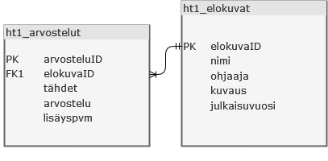

Harjoitustyö 1: arvostelut
Yleistä
Tehtävänä on tehdä web-sovellus jolla voidaan kirjoittaa arvosteluita ja hallita niitä. Valitse omalle sovelluksellesi jokin tietty aihe jota arvostellaan. Aihe voi olla peli, elokuva, tv-sarja tms. Noudata tietokannan kanssa ohessa annettua mallia, voit kuitenkin muokata sitä halutessasi. Kun valitset aiheen sinun kannattaa miettiä mitä kenttiä taulu arvosteltava tarvitsisi lisää.Tietokanta
Laadi itsellesi kuvan kaltainen tietokanta. Nimeä tietokanta järkevästi.

Voit muuttaa arvioitavia asioita sisältävän taulun omaan aiheeseesi sopivaksi.
Taso 1
- Laadi tietokantaasi kaksi taulua, toinen sisältää arvioitavat asiat (esim. ht1_elokuvat), toinen arvostelut (esim ht1_arvostelut).
- Tee kansio arvostelut ja sen alle mielellään alikansio images ja components. Työssä käytetyt kuvat tulisi tallettaa images-kansioon ja coponents-kansiossa esimerkiksi funktioita ja sivuilla hyödynnettäviä muita tiedostoja (header, footer, css).
- Laadi sovellukseesi toiminto uusien arvioitavien asioiden hallintaa varten (lisääminen, poistaminen, muokkaaminen). Jos arvosteltavasta asiasta on tehty jo arvostelu niin sitä ei saa poistaa sovelluksesta.
- Laadi sovellukseesi toiminto uusien arovsteluiden lisäämistä varten.
Taso 2
- Lisää etusivu, jolla näytetään viisi uusinta arvostelua järjestettynä lisäyspäivän mukaiseen järjestykseen. Näytä arvostelun lisäyspäivä, annetut tähdet, arvosteltavan asian nimi sekä varsinainen arvostelun teksti.
- Lisää etusivulle näkyviin myös kaikki arvosteltavat asiat. Näytä arvosteltavista asioista montako arvostelua on tehty ja mikä on arvostelujen tähtien keskiarvo.
- Lisää etusivulle linkki tai painike jolla voidaan kirjautua sovellukseen. Vain kirjautunut käyttäjä voi tehdä arvostelun tai hallita arvosteltavia asioita. Voit käyttää kirjautumisessa "kovakoodattua" salasanaa.
Taso 3
- Lisää uusi taulu johon lisätään käyttäjät. Tarvittavia tietoja ovat nimi, sähköposti, salasana ja liittymispäivä.
- Lisää sovellukseesi rekisteröityminen. Uusi käyttäjä rekisteröityy lomakkeen avulla. Rekisteröityessä tulee varmistaa, ettei samalla sähköpostiosoitteella ole jo olemassa olevaa käyttäjää. Käyttäjän salasana tulee talletaa tietokantaan salatussa muodossa (esim. Argon2).
- Toteuta kirjautuminen käyttäen tietokannan taulua.